A story for young learners. Practical skills for future researchers. Conversations that connect synthetic biology to everyday life.
01 / YOUNG LEARNERSPrimary school education
01The Journey of the Hero HotPETase
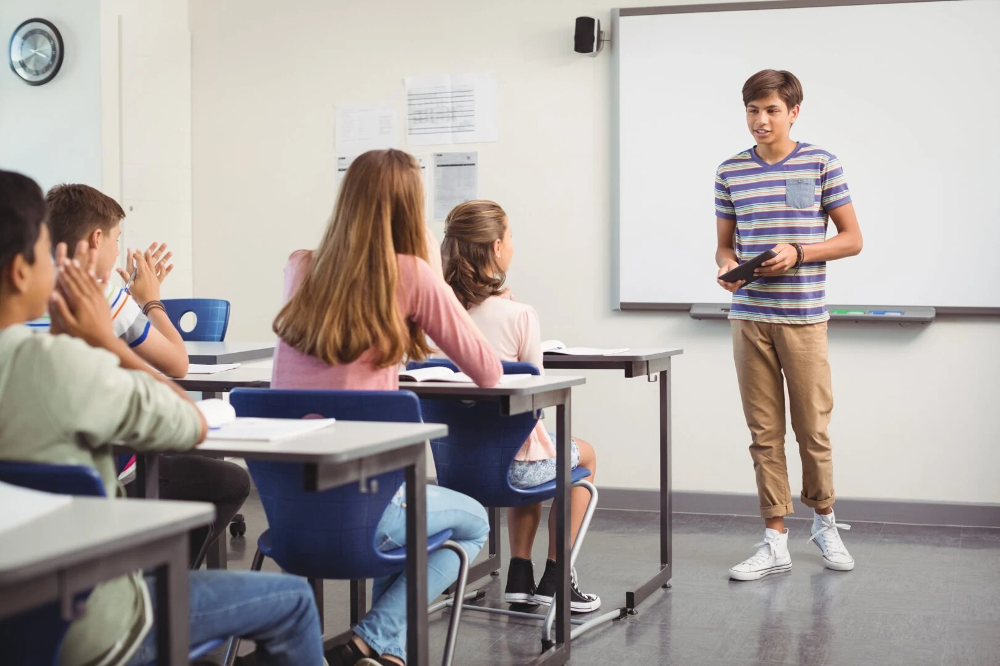
View full sizeIn March 2026, we introduced our project to elementary students through “The Journey of the Hero HotPETase.” PETase was our protagonist, battling a giant PET plastic monster whose rigidity made it difficult for the enzyme to break it down. But PET had a weakness: heat. As temperatures rose toward PET’s glass transition temperature, its polymer chains became more mobile, making the plastic easier to attack. Unfortunately, PETase struggled at these temperatures, losing its structure and activity. Enter its mentor, Pichia pastoris, which helped glycosylate PETase, giving the enzyme heat-resistant armor that improved its thermostability. With its new armor, our hero could take on PET plastic at higher temperatures. Beyond our story, we taught students in grades 1–5 about proteins and the dangers of plastic and microplastics. They then presented their own microplastics projects and plans to tackle plastic pollution in their school community. We offered suggestions to strengthen their ideas, inspiring us to plan future experiments where students could investigate how enzymes break down plastic themselves.
02Elementary Science Exploration Workshop
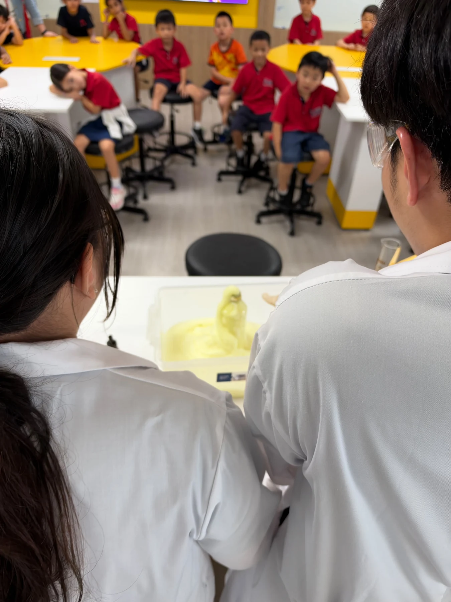
View full size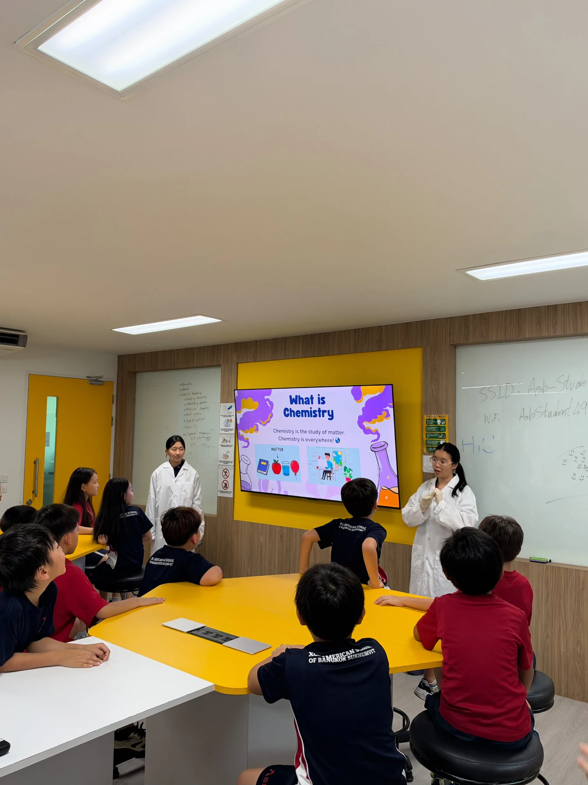
View full size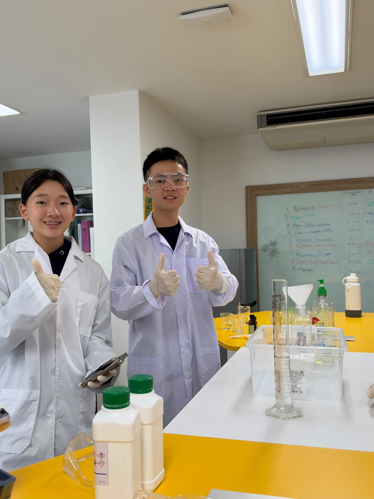
View full sizeWe turned the kids’ interest during our presentation into an after-school event, setting up presentations and hands-on workshops where they could experiment with biology. We also conducted the elephant toothpaste experiment to entertain them and show them the power of science.
Our workshop stations reflected our own work in iGEM. Kids looked at cells under microscopes, connecting to our work in microbiology, and conducted the elephant toothpaste experiment using yeast, which also tied into our choice of Pichia pastoris. We wanted to give these elementary students a taste of what it was like to conduct scientific experiments without bringing them directly into the wet lab.
What surprised us was that the kids wanted to do even more experiments in the future. Taking this into account, we plan to run similar workshops with the next iGEM team in 2027. Even members who won’t be joining the next team plan to continue these activities outside iGEM, helping bring more hands-on science opportunities to younger students.
02 / PRACTICAL EXPERIENCESecondary school education
01Learning laboratory biosafety
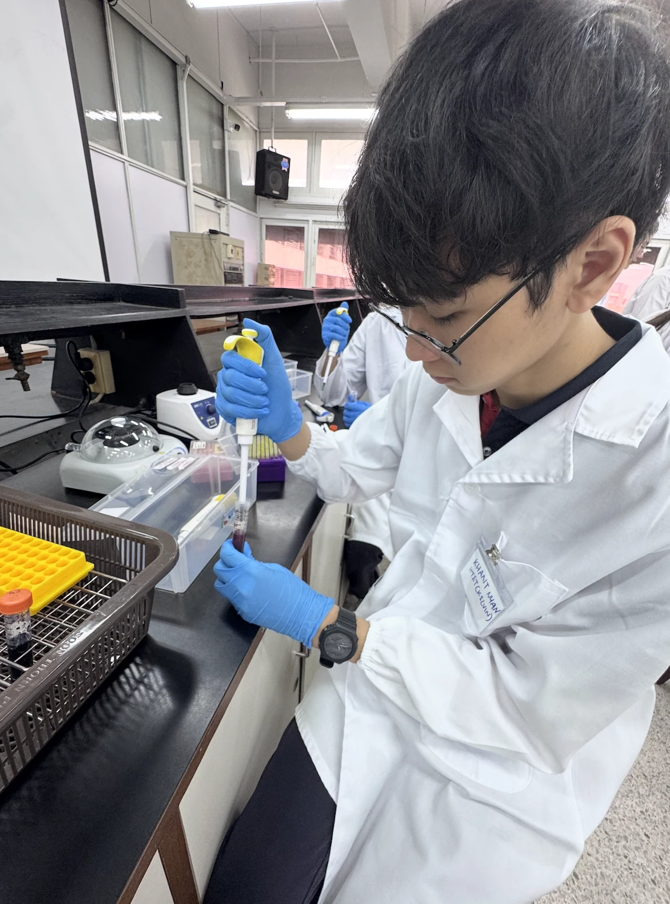
View full size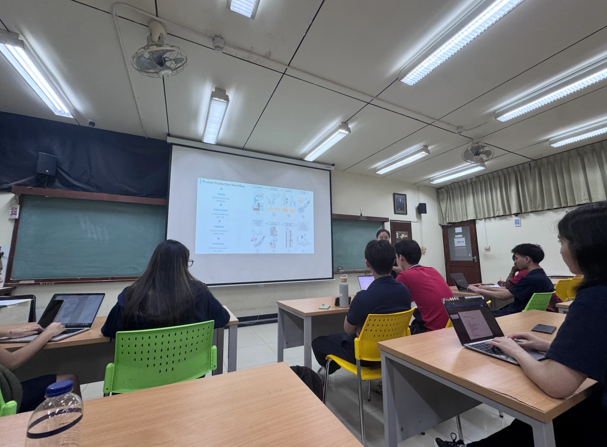
View full size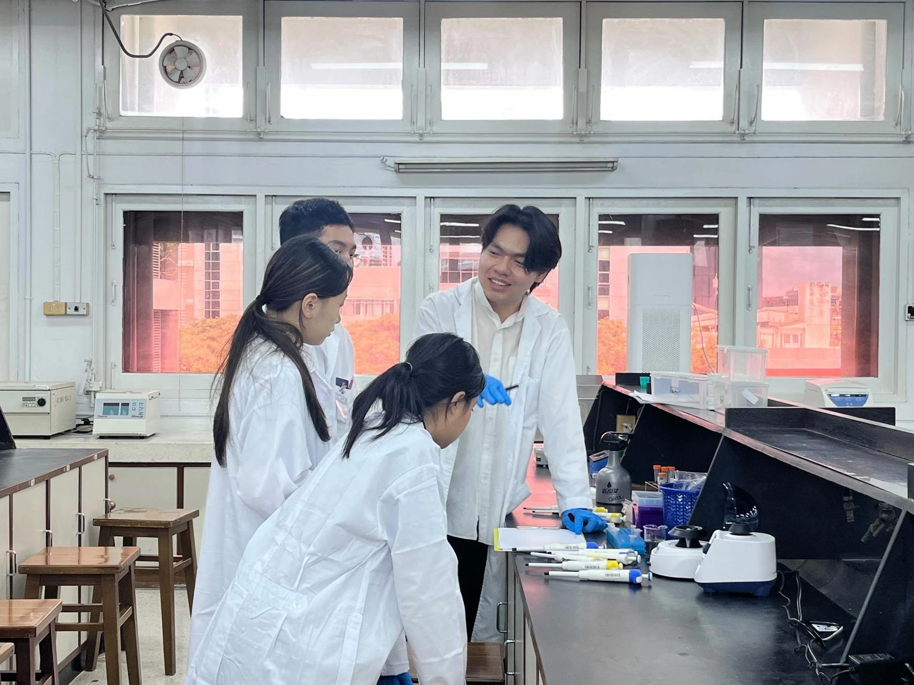
View full sizeHigh school is a time when students begin to explore pathways and discover where their interests can take them. Here at the American School of Bangkok, we have a large student body interested in STEM, biology, and laboratory work. Our iGEM team serves as a bridge between students and opportunities to gain hands-on laboratory experience. In the first cycle of our educational journey, we completed Chulalongkorn University’s Laboratory Biosafety course in preparation for our iGEM wet-lab phase. Through the course, we learned the importance of PPE, including lab coats, gloves, and eye protection; laboratory access and safety procedures; aseptic and good microbial techniques; proper disinfection and sterilization; emergency procedures; and chemical safety. We then applied these principles in our work at Chulalongkorn University, where only trained personnel conduct experiments and work surfaces and equipment are disinfected before and after use.
02From training to a student-friendly lesson
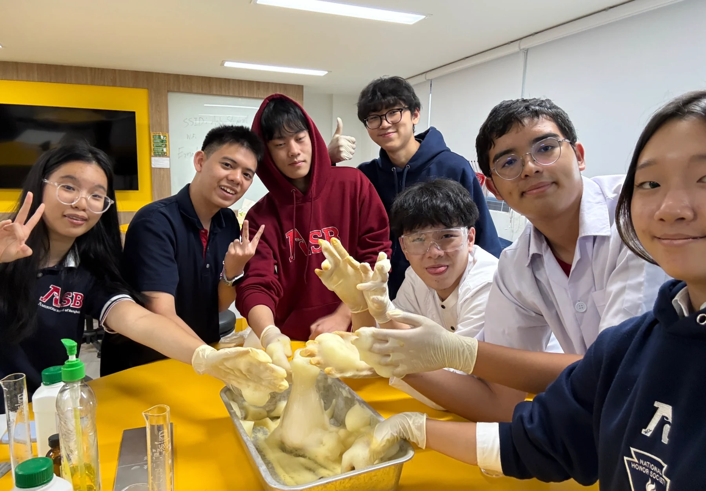
View full sizeThen we adapted the knowledge we gained into a student-friendly lesson at our school laboratory. Although we lacked the equipment needed to demonstrate advanced biosafety procedures directly, we designed a simple experiment that emphasized the fundamentals of good laboratory practice, including proper PPE, safe chemical handling, aseptic technique, accurate measurement, workspace organization, and waste disposal. Through a yeast-based elephant toothpaste experiment, students could practice measuring materials, following experimental procedures, and maintaining a safe workspace while applying the principles from our biosafety crash course.
03 / OUR COMMUNITYSociety
Introduction to synthetic biology and iGEM
01Listening at our scientific booth
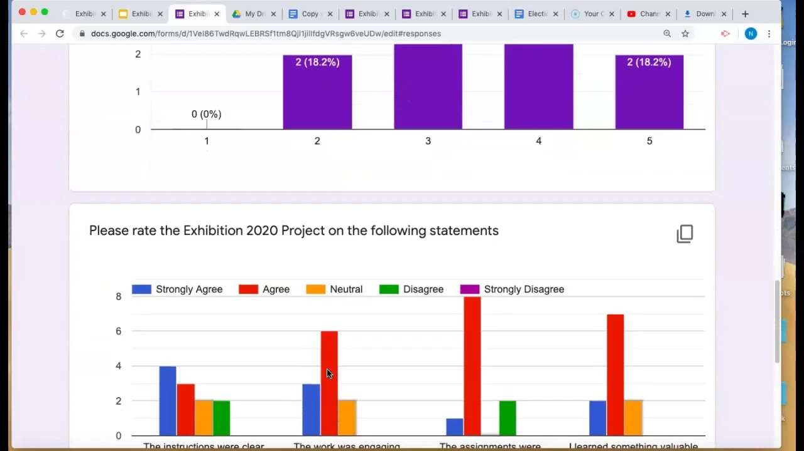
View full sizeWe organized a scientific booth at our grand open house before our main presentation to understand parents’ opinions of our project and their willingness to use synthetic biology-derived products on their skin. Through a survey, we aimed to identify gaps in their knowledge and understand what concerns they had about these products. We also wanted to explore how familiar they were with microorganisms such as E. coli, which is often associated with fecal matter, and yeast, despite their applications across various industries. By introducing these applications, we hoped to show that products derived from microorganisms could offer sustainable, cost-effective alternatives worth considering for the future.
We were surprised to find that many parents were already comfortable with using synthetic biology-derived products on their skin. However, some wanted to learn more about the research behind these products and how their safety was established, while others remained concerned about the concept itself. These findings informed our next step:
02A true-or-false game with 160 parents
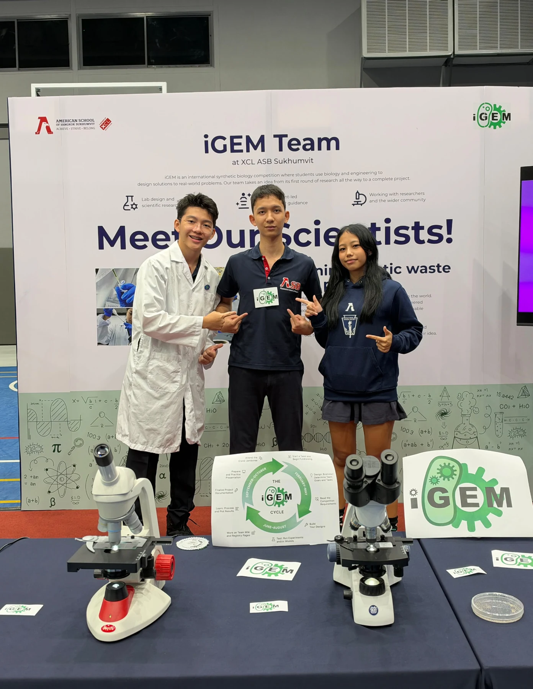
View full size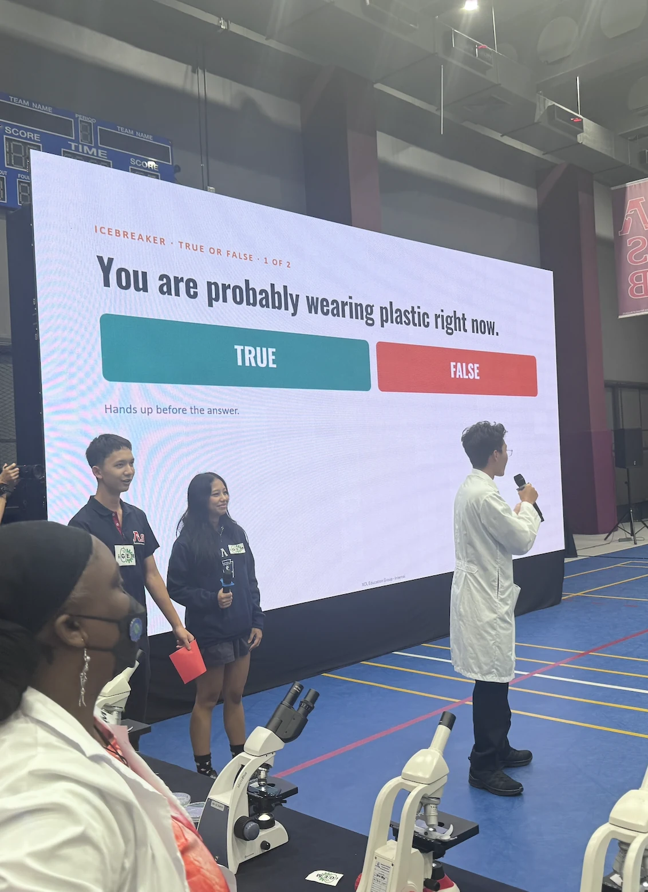
View full size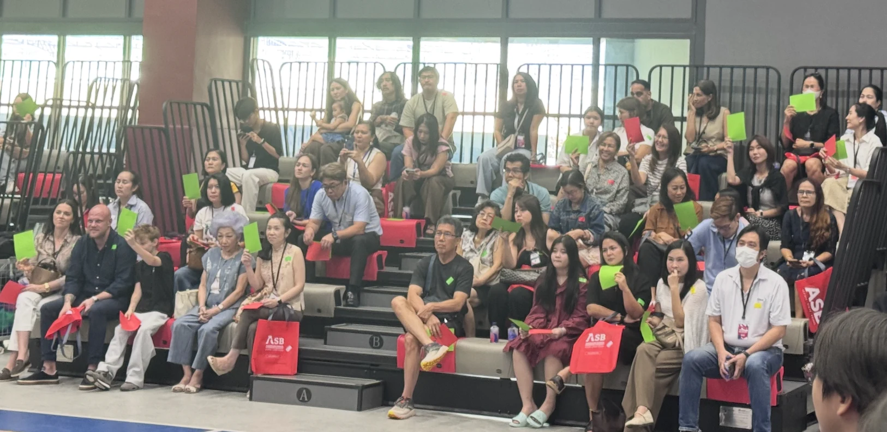
View full size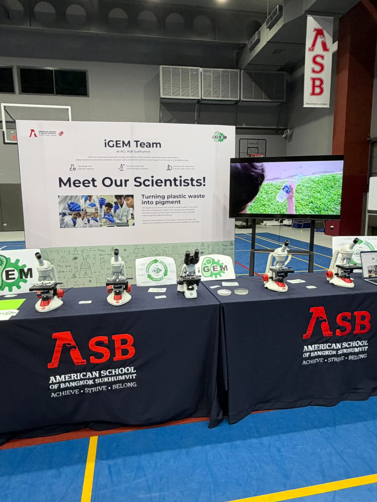
View full sizeWe played a true-or-false game with 160 parents attending the American School of Bangkok’s grand open house, showing them how plastic is embedded in everyday life and how synthetic biology is already used to produce familiar products, such as insulin, enzymes used in laundry detergents, biofuels, and biodegradable plastics. Through this activity, we aimed to raise awareness of plastic pollution in our community and introduce parents to the practical applications of synthetic biology, challenging misconceptions about its safety and potential.
04 / CONTINUING THE JOURNEYiGEM Club
On top of that, in the spirit of creating an environment where students can explore their interests in biology, we transformed the iGEM team into a club that students can join each year. Every current member becomes a mentor for the incoming cohort, passing on the experience and skills we have developed while recruiting students who have shown a strong interest in science. The club meets every Tuesday after school in the biology lab.
Rather than lecturing students on CRISPR-Cas9 or prescribing a particular research direction, we give them the foundation to explore independently. After teaching the basics of gene editing, transcription, and translation, we introduce them to iGEM’s different villages and help them explore the areas that interest them. Through open discussions and brainstorming sessions, students develop and challenge their own ideas for the next iGEM project rather than simply following the pathway of the previous team.
This was especially significant because iGEM became ASB’s only research-based student club and, in the school’s 45-year history, its first club dedicated to synthetic biology. We pitched the club framework directly to the school, which supported us by funding the resources needed for both our current research and the next iGEM cohort.
More importantly, iGEM has helped shift how ASB approaches student-led research. Seeing students take an idea from the classroom into an actual research project has encouraged the school to invest more in student-led initiatives and independent exploration. We want to show future students that they can pursue ideas beyond the classroom and create tangible change with the right guidance, mindset, and resources. That is what we hope to build through iGEM.
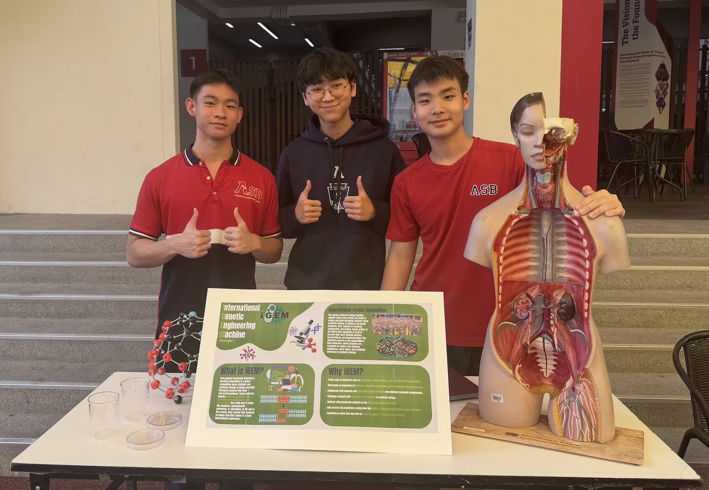
View full size